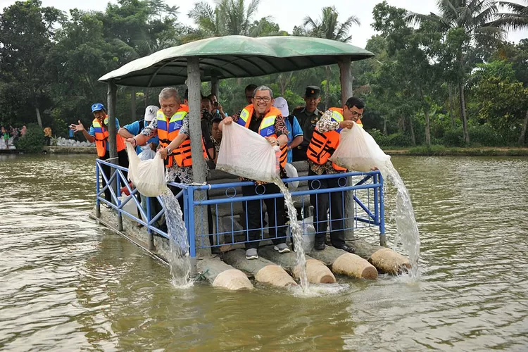

Tabur Benih di Situ Pengasinan
Pemerintah Kota Depok bersama warga setempat mengadakan kegiatan tabur benih ikan di Situ Pengasinan. Kegiatan ini bertujuan untuk menjaga ekosistem perairan sekaligus meningkatkan potensi wisata.